原创2016/11/27
2011年奥巴马总统自掏腰包
买了一套精酿设备搬进白宫
为自己酿制的啤酒取名“白宫蜜酿”
他也成为了第一个在白宫酿啤酒的总统
今年11月，沸沸扬扬的大选尘埃落定
几个月之后
他将不得不搬离白宫
一起搬走的还有他的精酿设备
一想到这
我就控制不住我自己
此时，在地球的另一端
另外两个男人
正忙着让他们的精酿驻德国驻华使馆
当然是应德国大使的邀请啦
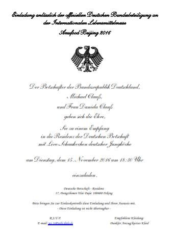
到底是什么精酿
这么大来头？
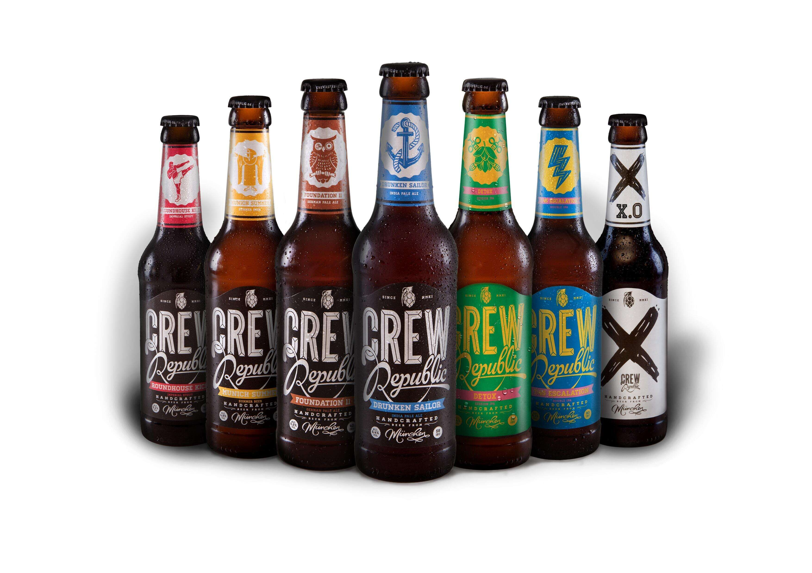
灯~等灯等灯…
来自德国慕尼黑的Crew Republic！
Crew Republic一进入会场
热情的小伙伴就一拥而上
他们这样拍
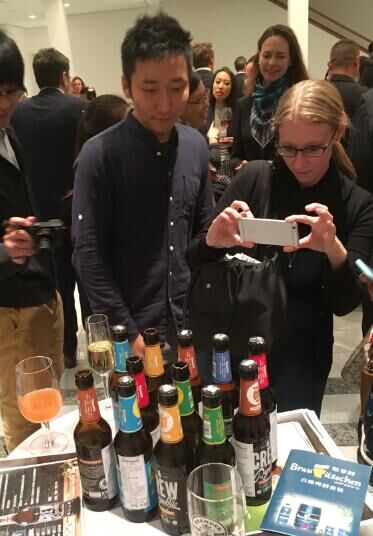
这样拍
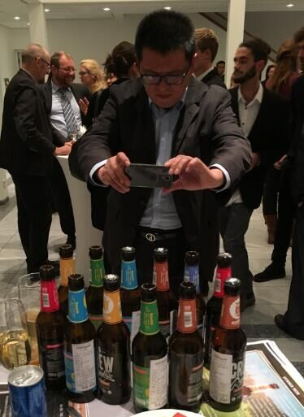
这样拍
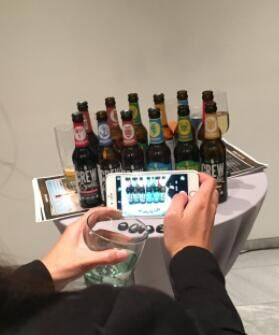
还这样拍
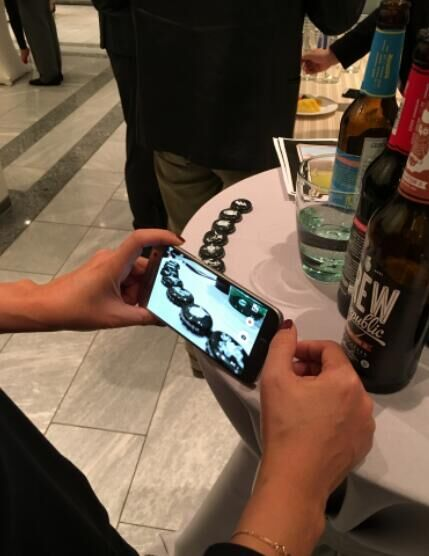
连瓶盖都不放过啊喂！@
为什么Crew Republic会有这么高的人气
因为……
确实是太！好！喝！了！！！
为啥crewrepublic的酒这么好喝
这就要问酿酒师Mario Hanel (左) 和 Timm Schnigula (右)
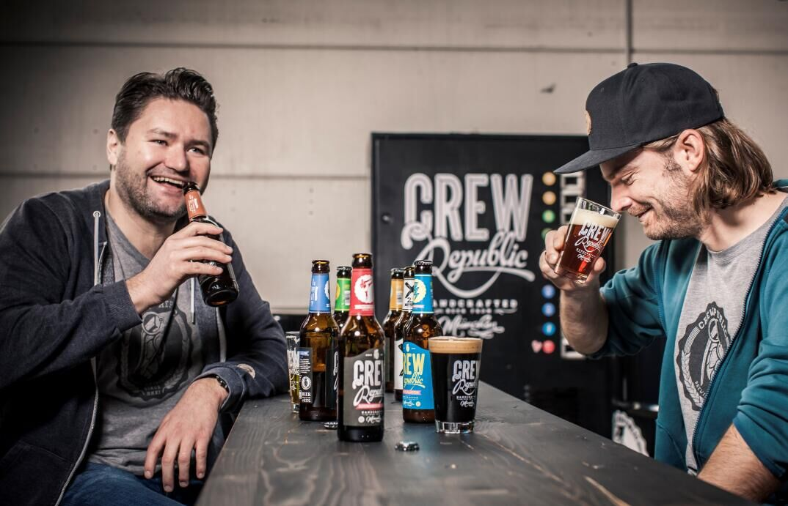
最开始，出于兴趣
他们在自家后院搞了一套家酿设备
大概是这样婶儿的
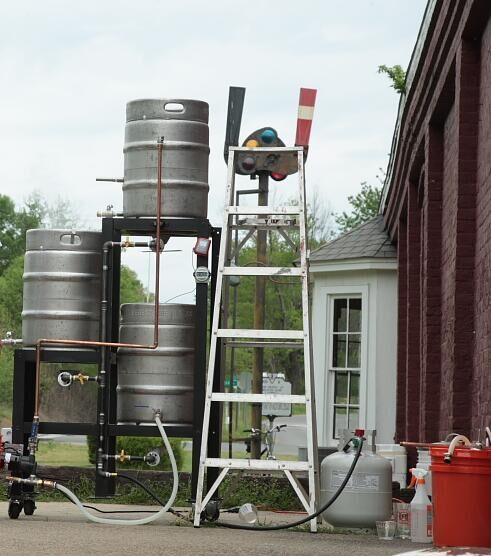
第一批酒酿成以后
他们很自然的和朋友家人分享
然后……
“We didn’t really do any market research, but everyone that tried our beer really liked it.
So we felt like it would work”. That was when they decided to make it official.
我来给大家解读一下：不是我们非要做酒
是大家喝完我们的酒，都说我们牛X！
酿酒天赋太高我们也没办法。摊手~
但是想要商业化，去哪里找投资
让这两兄弟为难不已
这时候
另外一个男人走进了他们的生活
Stephan J Barth
Stephan J Barth是谁？
不认识的小伙伴也别着急
在德国，有一个历经7代人
有着222年历史（好奇怪的历史时间……）
全球酒花贸易份额占有率排名第一的
酒花贸易集团
叫“Barth-Haas Group”
这里面的“Barth”
说的就是他
能做200多年历史的家族企业的掌门人
肯定不简单
至于这个男人如何厉害
那就是另外一个故事了
有Barth先生的投资
最起码不用担心酒花的货源了，对吧？
“我们要全世界现场考察，采购最好的原料！”
Hanel和Schnigula这两兄弟义正言辞的说
“不然那我还能以什么借口出去浪~”
好吧，以上内容是我脑补的
不过，Hanel和Schnigula确实是从全球范围的供应商里
严选啤酒原料
酿造设备也是不断升级
鸟枪换炮
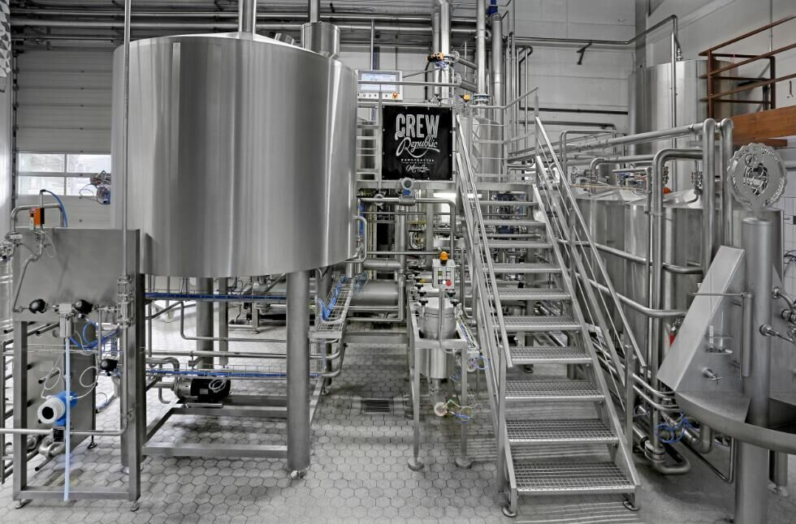
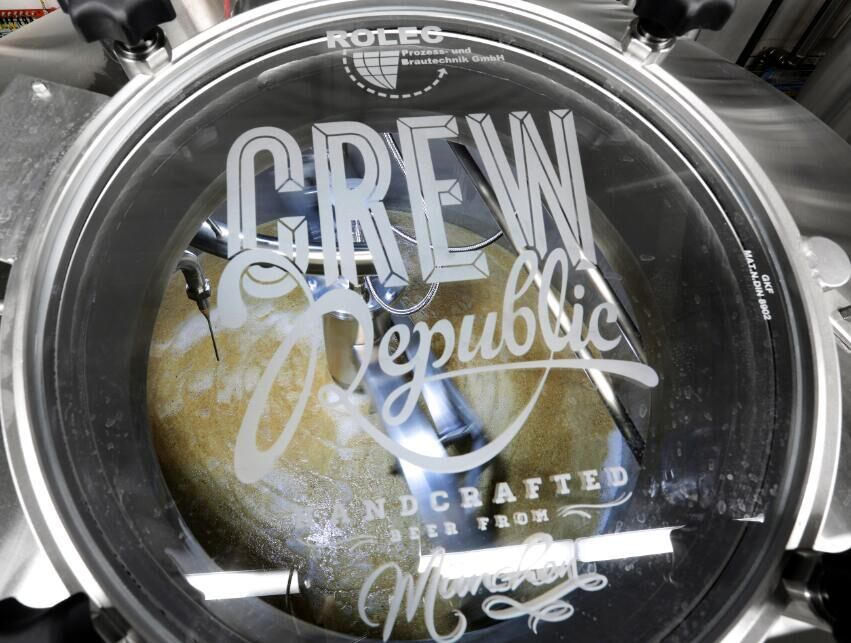
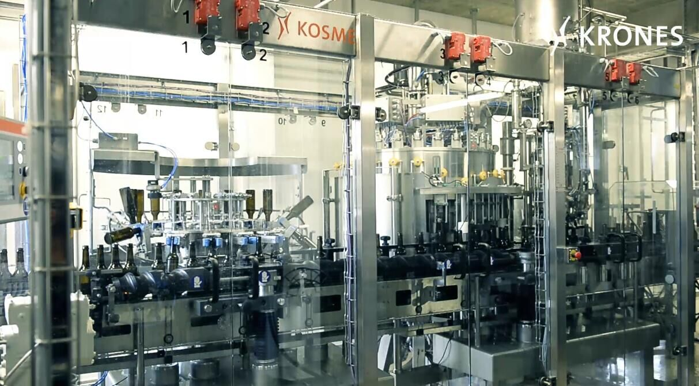
同时，Hanel和Schnigula两兄弟
依旧遵守古老的德国纯酿法
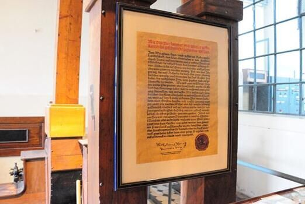
万事俱备矣
这两兄弟更是将他们的天赋
和对啤酒独特的理解
发挥的淋漓尽致
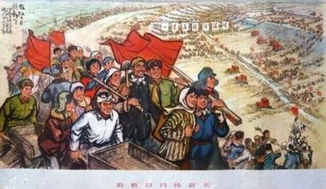
唯有奋斗多壮志
敢教日月换新天
从这时起
Crewrepublic精心酿造的每一瓶酒
都饱含这他们的热情和创意
2014年，第一款Imperial Stout
更是在各种大奖赛上
拿奖拿到手软
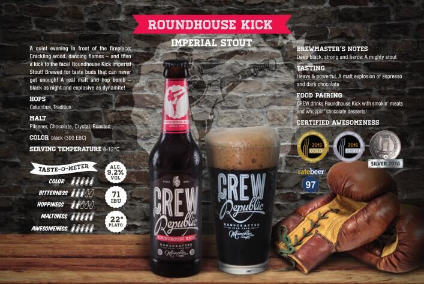
2016 Meininger Craft Beer Award(Silver Medal)
2016 Dublin Craft Beer Cup(Silver Medal)
2015 Meininger Craft Beer Award(Gold Medal)
2015 Dublin Craft Beer Cup(Silver Medal)
2014 Dublin Craft Beer Cup(Bronze Medal)
像Imperial Stout这么屌的
在CrewRepublic还有5个！
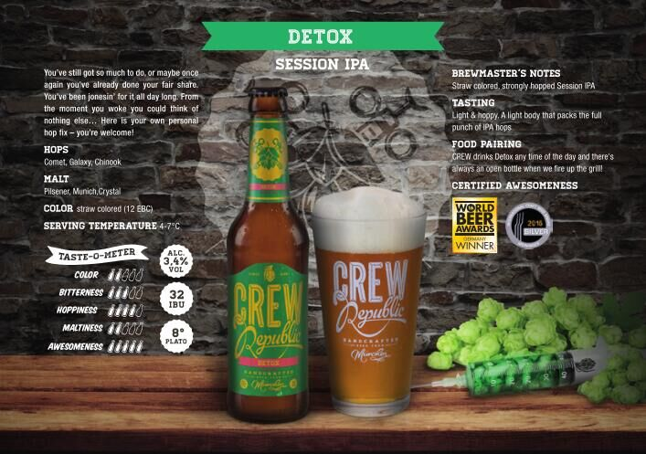
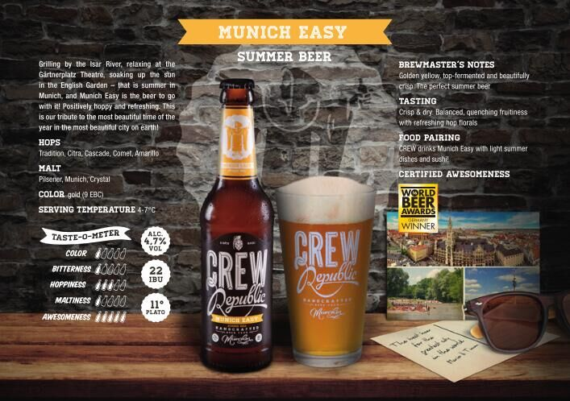
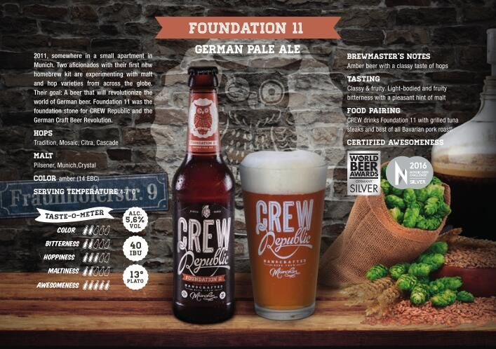
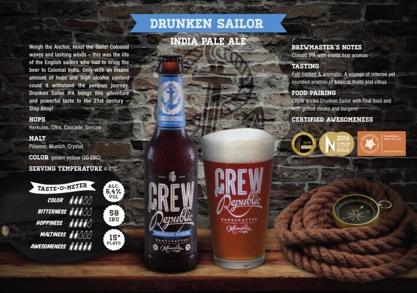
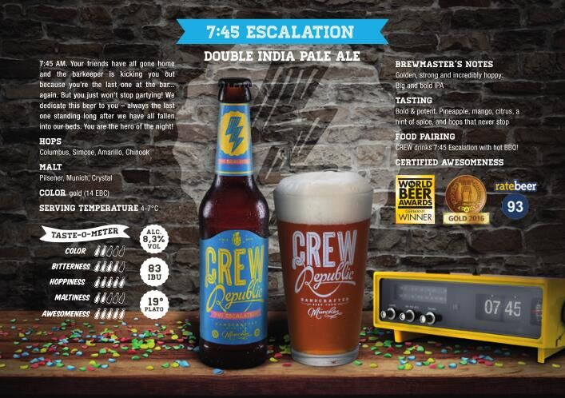
这么牛的酒
为啥现在才来中国
因为产量低啊
在德国都供不应求啊
在德国买的话
基本都是这样婶儿的
要不是Barth-Haas China主张进口
还真不知道什么时候
中国消费者才能喝到这么好的啤酒
不说了
我买酒了去了…
什么，你也想买？
呃……本来不想告诉你
好吧，戳这里